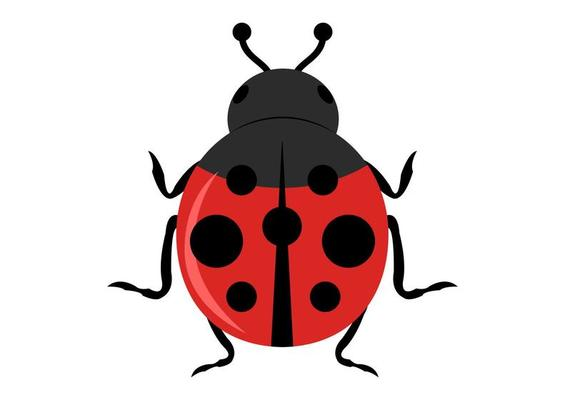

<!DOCTYPE html>
<html>

<head>
  <meta charset="utf-8" />
  <meta http-equiv="X-UA-Compatible" content="IE=edge" />
  <link rel="shortcut icon" href="#">
  <title>LT Golf AR Project</title>
  <script src="https://aframe.io/releases/1.0.4/aframe.min.js"></script>
  <script src="https://unpkg.com/aframe-look-at-component@0.8.0/dist/aframe-look-at-component.min.js"></script>
  <script src="https://raw.githack.com/AR-js-org/AR.js/master/aframe/build/aframe-ar-nft.js"></script>
  <script src="https://unpkg.com/aframe-extras@3.3.0/dist/aframe-extras.min.js"></script>
  <script src="./components/get-user-coords.js"></script>
  <script src="./components/toggle-visibility.js"></script>
  <script src="./components/change-model-on-click.js"></script>
  <script src="./components/bug-counter.js"></script>
  <link rel="stylesheet" href="bug-hunter.css">
</head>
<body>
  
  <!-- <div class="header" id="header">
    <p id="closestBug" >Closest Bug: </p>
    
    
    <a id="start" href="./form.html">Finish</a>
  </div> -->
  
  <div id='gameplay'>
    <a-scene bug-counter hot-cold-bar vr-mode-ui="enabled: false" style="margin: 0; overflow: hidden;">
      <a-camera id='camera' get-user-coords arjs-look-controls='smoothingFactor: 0.1'
        gps-projected-camera='gpsMinDistance: 5' rotation-reader>
        <!-- <a-text updateScoreboard id="score" scale=".3 .3 .3" position=".68 -.75 -2" value="0/18" color="#000000"></a-text> -->
        <!-- <a-entity cursor raycaster="far: 20; interval: 1000; objects: .clickable"></a-entity> -->
        <a-entity 
        animation__click="property: scale; startEvents: click; easing: easeInCubic; dur: 150; from: 0.1 0.1 0.1; to: 1 1 1"
        animation__fusing="property: scale; startEvents: fusing; easing: easeInCubic; dur: 1500; from: 1 1 1; to: 0.1 0.1 0.1"
        animation__mouseleave="property: scale; startEvents: mouseleave; easing: easeInCubic; dur: 500; to: 1 1 1"
        cursor="fuse: true"
        geometry="primitive: ring; radiusInner: 0.02; radiusOuter: 0.03"
        position="0 0 -1">
      </a-entity>
      <!-- <a-image src="assets/pictures/crosshair1.png" position="0 0 -1"></a-image> -->
        
      </a-camera>
      <a-image src="#crosshair" position="0 0 -1" scale=".2 .2 .2"></a-image>


      <!-- <a-entity cursor="rayOrigin:mouse" cursor="fuseTimeout: 0;" ></a-entity> -->

      <a-asset>
        <a-asset-item id="lady_bug" src="assets/models/flat_lady_bug/scene.gltf">
          

      </a-asset>

      <a-entity>
        <!-- Grayson Coords -->
        <a-entity id="grayson-1" gltf-model="#lady_bug" visible="false" toggle-visibility scale="6 6 6" change-model-on-click
          gps-projected-entity-place="latitude:41.158323; longitude: -93.591712" animation="property: rotation; dur: 10000;
          to: 0 360 0; loop: true" raycaster="objects: [data-raycastable]">
        </a-entity>

        <a-entity id="grayson-2" gltf-model="#lady_bug" visible="false" toggle-visibility scale="6 6 6" change-model-on-click
          gps-projected-entity-place="latitude: 41.158476; longitude: -93.592198" animation="property: rotation; dur: 10000;
          to: 0 360 0; loop: true">
        </a-entity>

        <a-entity id="grayson-3" gltf-model="#lady_bug" visible="false" toggle-visibility scale="6 6 6" change-model-on-click
          gps-projected-entity-place="latitude: 41.158491; longitude: -93.591915" animation="property: rotation; dur: 10000;
          to: 0 360 0; loop: true" raycaster="objects: [data-raycastable]">
        </a-entity>
        
        <!-- Brandon's Coords -->
        <a-entity id="loto-lake" gltf-model="#lady_bug" visible="false" toggle-visibility
          gps-projected-entity-place="latitude: 38.080182; longitude:  -92.821941;" animation="property: rotation; dur: 10000;
          to: 0 360 0; loop: true">
        </a-entity>

        <a-entity id="loto-dock" gltf-model="#lady_bug" visible="false" toggle-visibility
          gps-projected-entity-place="latitude: 38.080136; longitude:  -92.821914;">
        </a-entity>

        <!-- Nate's Coords -->
        <!-- sound="src: #tieSound; volume: 2; rolloffFactor: 2; refDistance: 1; autoplay: true; distanceModel: exponential; loop: true" -->
        <a-entity id="nate-1" gltf-model="#lady_bug" visible="false" toggle-visibility scale="1 1 1" change-model-on-click
          gps-projected-entity-place="latitude: 41.573; longitude: -93.941;" animation="property: rotation; dur: 10000;
          to: 0 360 0; loop: true">
        </a-entity>

        <a-entity id="nate-2" gltf-model="#lady_bug" visible="false" toggle-visibility scale="1 1 1" change-model-on-click
          gps-projected-entity-place="latitude: 41.573711; longitude: -93.9407835;" animation="property: rotation; dur: 10000;
          to: 0 360 0; loop: true"></a-entity>
        <a-entity id="nate-3" gltf-model="#lady_bug" visible="false" toggle-visibility scale="1 1 1" change-model-on-click
          gps-projected-entity-place="latitude: 41.5737; longitude: -93.9405;" animation="property: rotation; dur: 10000;
          to: 0 360 0; loop: true"></a-entity>

        <!-- Elizabeth's Coords -->
        <a-entity id="side-yard" gltf-model="#lady_bug" visible="false" toggle-visibility scale="1 1 1" change-model-on-click
          gps-projected-entity-place="latitude: 41.3394; longitude:  -93.5651;"
          animation="property: rotation; dur: 10000; to: 0 360 0; loop: true">
        </a-entity>

        <a-entity id="backyard" gltf-model="#lady_bug" visible="false" toggle-visibility scale=".5 .5 .5" change-model-on-click
          gps-projected-entity-place="latitude: 41.339; longitude:  -93.565;"
          animation="property: rotation; dur: 10000; to: 0 360 0; loop: true">
        </a-entity>

        <!-- Office Coords -->
        <!-- North -->
        <a-entity id="office-N" gltf-model="#lady_bug" visible="false" toggle-visibility scale=".5 .5 .5" change-model-on-click
          gps-projected-entity-place="latitude: 41.6564324; longitude:  -93.7447186;" animation="property: rotation; dur: 10000;
          to: 0 360 0; loop: true">
        </a-entity>

        <!-- East -->
        <a-entity id="office-E" gltf-model="#lady_bug" visible="false" toggle-visibility scale=".5 .5 .5" change-model-on-click
          gps-projected-entity-place="latitude: 41.6562882; longitude:  -93.7445112;" animation="property: rotation; dur: 10000;
          to: 0 360 0; loop: true">
        </a-entity>
        <!-- South -->
        <a-entity id="office-S" gltf-model="#lady_bug" visible="false" toggle-visibility scale=".5 .5 .5" change-model-on-click
          gps-projected-entity-place="latitude: 41.6561776; longitude:  -93.7449206;" animation="property: rotation; dur: 10000;
          to: 0 360 0; loop: true">
        </a-entity>
        <!-- West -->
        <a-entity id="office-W" gltf-model="#lady_bug" visible="false" toggle-visibility scale=".5 .5 .5" change-model-on-click
          gps-projected-entity-place="latitude: 41.6562983; longitude:  -93.7449434;" animation="property: rotation; dur: 10000;
          to: 0 360 0; loop: true">
        </a-entity>


        <!-- Glen Oaks Coords-->
        <!-- Hole 1 -->
        <a-entity id="hole-1" gltf-model="#lady_bug" visible="false" toggle-visibility scale=".5 .5 .5" change-model-on-click
          gps-projected-entity-place="latitude: 41.546814; longitude:  -93.778357;" animation="property: rotation; dur: 10000;
        to: 0 360 0; loop: true"></a-entity>
        <!-- Hole 2 -->
        <a-entity id="hole-2" gltf-model="#lady_bug" visible="false" toggle-visibility scale=".5 .5 .5" change-model-on-click
          gps-projected-entity-place="latitude: 41.544847; longitude: -93.779215;" animation="property: rotation; dur: 10000;
         to: 0 360 0; loop: true"></a-entity>
        <!-- Hole 3 -->
        <a-entity id="hole-3" gltf-model="#lady_bug" visible="false" toggle-visibility scale=".5 .5 .5" change-model-on-click
          gps-projected-entity-place="latitude: 41.543747; longitude: -93.781822;" animation="property: rotation; dur: 10000;
        to: 0 360 0; loop: true"></a-entity>
        <!-- Hole 4 -->
        <a-entity id="hole-4" gltf-model="#lady_bug" visible="false" toggle-visibility scale=".5 .5 .5" change-model-on-click
          gps-projected-entity-place="latitude: 41.546461; longitude: -93.781410;" animation="property: rotation; dur: 10000;
        to: 0 360 0; loop: true"></a-entity>
        <!-- Hole 5 -->
        <a-entity id="hole-5" gltf-model="#lady_bug" visible="false" toggle-visibility scale=".5 .5 .5" change-model-on-click
          gps-projected-entity-place="latitude: 41.548171; longitude: -93.780069;" animation="property: rotation; dur: 10000;
        to: 0 360 0; loop: true"></a-entity>
        <!-- Hole 6 -->
        <a-entity id="hole-6" gltf-model="#lady_bug" visible="false" toggle-visibility scale=".5 .5 .5" change-model-on-click
          gps-projected-entity-place="latitude: 41.553278; longitude: -93.781002;" animation="property: rotation; dur: 10000;
      to: 0 360 0; loop: true"></a-entity>
        <!-- Hole 7 -->
        <a-entity id="hole-7" gltf-model="#lady_bug" visible="false" toggle-visibility scale=".5 .5 .5" change-model-on-click
          gps-projected-entity-place="latitude: 41.555976; longitude: -93.778567;" animation="property: rotation; dur: 10000;
      to: 0 360 0; loop: true"></a-entity>
        <!-- Hole 8 -->
        <a-entity id="hole-8" gltf-model="#lady_bug" visible="false" toggle-visibility scale=".5 .5 .5" change-model-on-click
          gps-projected-entity-place="latitude: 41.553848; longitude: -93.780745;" animation="property: rotation; dur: 10000;
      to: 0 360 0; loop: true"></a-entity>
        <!-- Hole 9 -->
        <a-entity id="hole-9" gltf-model="#lady_bug" visible="false" toggle-visibility scale=".5 .5 .5" change-model-on-click
          gps-projected-entity-place="latitude: 41.549665; longitude: -93.781399;" animation="property: rotation; dur: 10000;
      to: 0 360 0; loop: true"></a-entity>
        <!-- Hole 10 -->
        <a-entity id="hole-10" gltf-model="#lady_bug" visible="false" toggle-visibility scale=".5 .5 .5" change-model-on-click
          gps-projected-entity-place="latitude: 41.552515; longitude: -93.782590;" animation="property: rotation; dur: 10000;
      to: 0 360 0; loop: true"></a-entity>
        <!-- Hole 11 -->
        <a-entity id="hole-11" gltf-model="#lady_bug" visible="false" toggle-visibility scale=".5 .5 .5" change-model-on-click
          gps-projected-entity-place="latitude: 41.557533; longitude: -93.781131;" animation="property: rotation; dur: 10000;
      to: 0 360 0; loop: true"></a-entity>
        <!-- Hole 12 -->
        <a-entity id="hole-12" gltf-model="#lady_bug" visible="false" toggle-visibility scale=".5 .5 .5" change-model-on-click
          gps-projected-entity-place="latitude: 41.556610; longitude: -93.784790;" animation="property: rotation; dur: 10000;
      to: 0 360 0; loop: true"></a-entity>
        <!-- Hole 13 -->
        <a-entity id="hole-13" gltf-model="#lady_bug" visible="false" toggle-visibility scale=".5 .5 .5" change-model-on-click
          gps-projected-entity-place="latitude: 41.552957; longitude: -93.784672;" animation="property: rotation; dur: 10000;
      to: 0 360 0; loop: true"></a-entity>
        <!-- Hole 14 -->
        <a-entity id="hole-14" gltf-model="#lady_bug" visible="false" toggle-visibility scale=".5 .5 .5" change-model-on-click
          gps-projected-entity-place="latitude: 41.553680; longitude: -93.786314;" animation="property: rotation; dur: 10000;
      to: 0 360 0; loop: true"></a-entity>
        <!-- Hole 15 -->
        <a-entity id="hole-15" gltf-model="#lady_bug" visible="false" toggle-visibility scale=".5 .5 .5" change-model-on-click
          gps-projected-entity-place="latitude: 41.549208; longitude: -93.786486;" animation="property: rotation; dur: 10000;
      to: 0 360 0; loop: true"></a-entity>
        <!-- Hole 16 -->
        <a-entity id="hole-16" gltf-model="#lady_bug" visible="false" toggle-visibility scale=".5 .5 .5" change-model-on-click
          gps-projected-entity-place="latitude: 41.548389; longitude: -93.784308;" animation="property: rotation; dur: 10000;
      to: 0 360 0; loop: true"></a-entity>
        <!-- Hole 17 -->
        <a-entity id="hole-17" gltf-model="#lady_bug" visible="false" toggle-visibility scale=".5 .5 .5" change-model-on-click
          gps-projected-entity-place="latitude: 41.545707; longitude: -93.783922;" animation="property: rotation; dur: 10000;
      to: 0 360 0; loop: true"></a-entity>
        <!-- Hole 18 -->
        <a-entity id="hole-18" gltf-model="#lady_bug" visible="false" toggle-visibility scale=".5 .5 .5" change-model-on-click
          gps-projected-entity-place="latitude: 41.547931; longitude: -93.782216;" animation="property: rotation; dur: 10000;
      to: 0 360 0; loop: true"></a-entity>

      <!-- Beaver Creek Coords-->
        <!-- Hole 1 -->
        <a-entity id="bc-hole-1" gltf-model="#lady_bug" visible="false" toggle-visibility scale=".5 .5 .5" change-model-on-click
          gps-projected-entity-place="latitude: 41.723803; longitude:  -93.768096;" animation="property: rotation; dur: 10000;
        to: 0 360 0; loop: true"></a-entity>
        <!-- Hole 2 -->
        <a-entity id="bc-hole-2" gltf-model="#lady_bug" visible="false" toggle-visibility scale="1 1 1" change-model-on-click
          gps-projected-entity-place="latitude: 41.723624; longitude:  -93.766187;" animation="property: rotation; dur: 10000;
        to: 0 360 0; loop: true"></a-entity>

        <!-- Hole 3 -->
        <a-entity id="bc-hole-3" gltf-model="#lady_bug" visible="false" toggle-visibility scale="6 6 6" change-model-on-click
          gps-projected-entity-place="latitude: 41.723624; longitude:  -93.766187;" animation="property: rotation; dur: 10000;
        to: 0 360 0; loop: true"></a-entity>

        <!-- Hole 4 -->
        <a-entity id="bc-hole-4" gltf-model="#lady_bug" visible="false" toggle-visibility scale="15 15 15" change-model-on-click
          gps-projected-entity-place="latitude: 41.718643; longitude:  -93.765961;" animation="property: rotation; dur: 10000;
        to: 0 360 0; loop: true"></a-entity>

      </a-entity>
    </a-scene>
  </div>
</body>
<div class="footer">
  
  
  
  <p id="score">0/18</p>
  <a id="start" href="./form.html">Finish</a>
</div>

</html>
